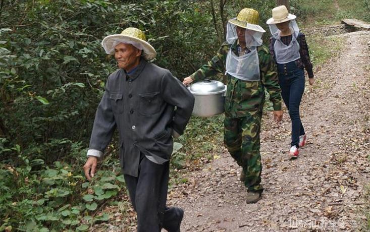

最纯天然、无污染的天然土蜂蜜
土蜂蜜又称野蜂蜂蜜，是中华蜜蜂采集深山里上百种野山花酿造而成，酿蜜周期长，产量稀缺，山区放养无任何污染，实属不可多得的蜜之极品。
我们的土蜂放养在大山深处，只为采酿出最纯天然、无污染的天然土蜂蜜。

原始老式土蜂圆桶，传统割蜜
传统土法过滤，唯一传统土缸储藏
手中的这一罐土蜂蜜，是近一万只中华土蜂，在深山里飞行数万公里，采集了近200万朵花的工作成果。它非常的纯净，没有污染，它的矿物质含量、生物活性物质的含量，是其他的蜂蜜难以企及的。
这种老式圆桶蜂箱，也可以算是国粹了。数千年以来，中国人就用这样的老式圆桶蜂箱养土蜂。这种养法的特点是：只给蜜蜂一个圆木桶，把它关在里面，等于一间空房子，里面的装修啊家具啊，全部要靠蜜蜂自己去造。这种老式蜂箱几乎已经绝迹了，只在南方的深山老林之中，还有极少数的老养蜂人，保留着这种方法养土蜂。
三代传承养蜂
圆桶土蜂蜜产量低、售价高接受的人少，都是外出打工的老乡给城里的朋友代而买一些，自己一般都舍不得吃，所以深山放养土蜂收入少，养的人越来越少。圆桶养蜂的传统在逐渐消失，爷爷热爱传统土蜂，是他这一辈子的事业，爸爸传承了爷爷的这份手艺，这又成了他这一辈子的事业，在我这一代，有了网络的平台，我可以通过它把中国传统圆桶土蜂蜜，传递出大山，让更多的人认识到圆桶土蜂，感受到来自传统的这份珍贵，让它跟上现代的脚步，一代一代传承下去，这是我从事这份事业最有价值的所在。